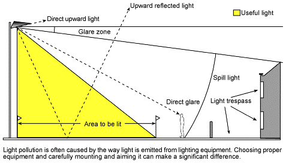

|
Navigation Bar
Home
Sitemap
Contacts
What is light pollution?
Light Trespass
Skyglow
Glare
Light Pollution’s effects
Effect on Humans
Effect on Animals
Effect on the Environment
Lighting schemes
Test Your Knowledge
|
What is Light Pollution?
You might be wondering, what is light pollution exactly?
Light pollution is an unwanted consequence of outdoor lighting and includes such effects as skyglow, light trespass, and glare.
Those types will be discussed later on. Stars make a night sky more wonderous. Light Pollution is like a curtain on a window.
Just like you can't see outside with a curtain in the way, you can't see the stars clearly, when light pollution "occurs".

Source: Lighting Research Center.
|